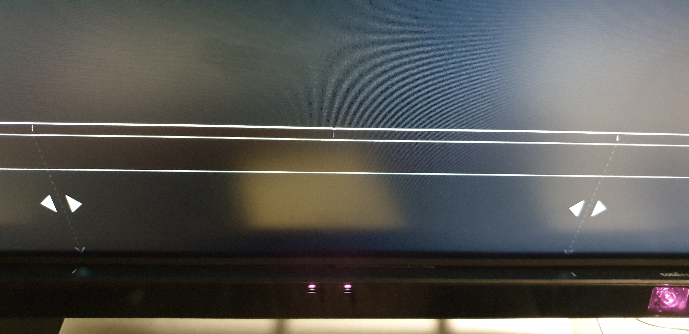

Tobii Hardware Installation
Follow the instructions in this video on how to attach your Tobii Eye Tracker to your monitor
A step by step guide to seting up the eye tracker and games on your system.
Follow the instructions in this video on how to attach your Tobii Eye Tracker to your monitor
Follow the instructions in this video on how to setup the Tobii software on your system
Align the arrows to the lines on top of your Tobii eye tracker at display setup, like this:
Everyone that uses the eye tracker must have their own profile that has the eye tracker
calibrated for their eyes, follow these instructions on how to setup a new profile:
Click HERE download the game.
Make sure you have an archiver installed on your system, such as WinRAR: https://www.rarlab.com/download.htm.
Right click on the downloaded file and extract like this:
Open the folder and click the SVR.exe file to run the game, select the appropriate options
in the configuration menu and you're ready to play!
Make sure you select your Tobii profile before playing if someone else has used the eye tracker before you.